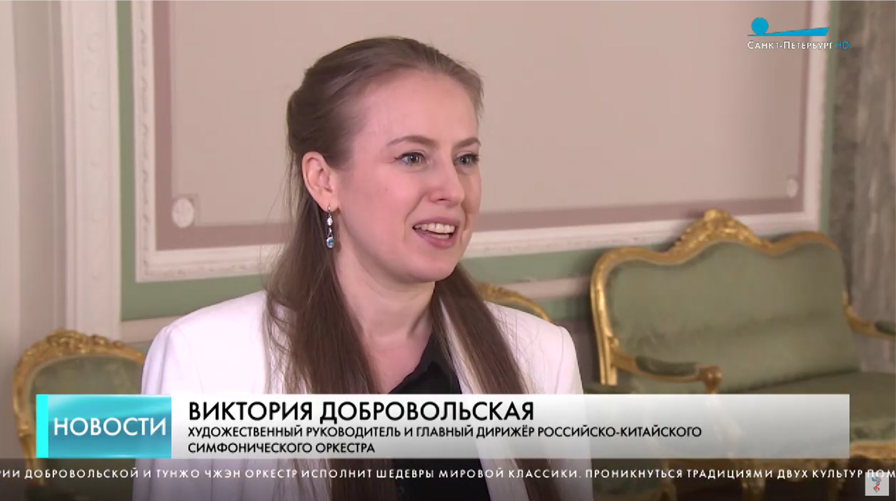

телеканал санкт-петербург
День Рождения Петербурга
Российско-китайский оркестр и хор выступят в Петербурге в День Рождения города
телеканал санкт-петербург
Российско-китайский оркестр и хор выступят в Петербурге в День Рождения города
телеканал мир
В филармонии имени Д.Д. Шостаковича идут репетиции российско-китайского симфонического оркестра
телеканал санкт-петербург
О музыке и творческом взаимодействии с Поднебесной

телеканал санкт-петербург
За короткое время РКСО стал заметным явлением в культурной жизни России

первый канал
Уникальный симфонический оркестр и его дирижёры. Что приподнесёт коллектив ко Дню Рождения города?

программа алисы дудаевой
Википедия утверждает, что таких женщин всего 30 на весь мир! Виктория - одна из них

первый канал. вести санкт-петербург
Виктория Добровольская и Тунжо Чжэн об особенностях работы с симфоническим оркестром и академическим хором

российская газета
Музыканты простились с Юрием Темиркановым концертом в его родном зале в день смерти Маэстро

cgtn
Глобальная телевизионная сеть Китая о гастролях Российско-китайского симфонического оркестра

classical music news
Россиянка Виктория Добровольская стала первой женщиной-дирижером в истории Бахрейна

новости от артемия лебедева
Концерт в Национальном театре в присутствовии членов королевской семьи, министра культуры Бахрейна, международного посольства

телеканал санкт-петербург
Дирижёры Виктория Добровольская и Тунжо Чжэн делятся эмоциями от работы над уникальным проектом